Data Preparation
Extract, transform, validate, and prepare datasets with SQL and Python.
Data Analyst / Data Scientist | Open to QA and data roles
I work across SQL, Python, ETL, data validation, dashboard reporting, and stakeholder explanation. I am also open to QA roles, willing to be trained, and ready to learn new domains, tools, and workflows quickly.
Profile
Extract, transform, validate, and prepare datasets with SQL and Python.
Build KPI views in Apache Superset, Databricks, Snowflake, and BI workflows.
Open to QA work and comfortable learning test processes, domains, and new tools.
Work Samples
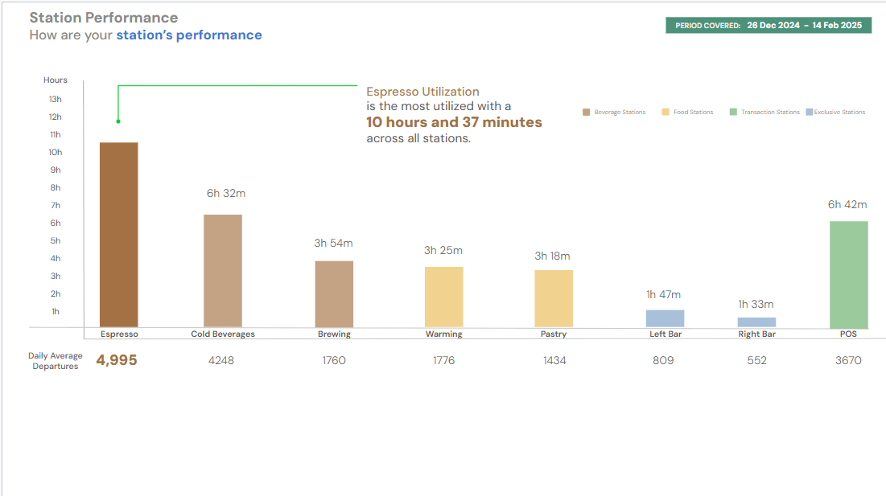
Operations Analytics
This view compares utilization by station and daily average departures. Espresso is the strongest capacity signal at 10 hours and 37 minutes, which tells stakeholders where staffing, equipment readiness, and queue monitoring should receive the most attention.
Business decision: prioritize the busiest station, monitor morning peak periods, and rebalance support work so service flow does not depend on one overloaded station.
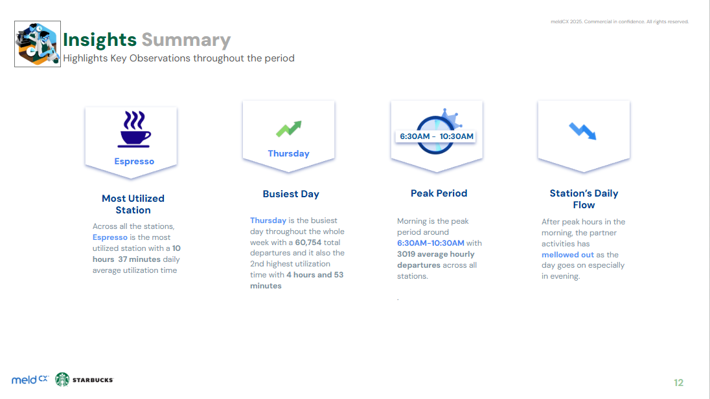
Executive Reporting
The summary turns dashboard findings into plain-language observations: most-utilized station, busiest day, peak period, and daily flow behavior. It is designed for managers who need the answer quickly before deciding where to intervene.
Work Sample / Data Product
This dashboard supports environmental monitoring by connecting tree records, map location, species mix, activity timing, and detailed row-level evidence. The world map helps stakeholders see where records are concentrated before they inspect the supporting charts.
Business decision: prioritize field validation in active map clusters, compare species and event activity, then use the detail table to trace the exact records behind each KPI before planning outreach or cleanup.
Komunitree Dashboard Breakdown
The portfolio view separates the dashboard into the decision pieces a stakeholder would use: where activity is happening, which categories are driving the numbers, and which records need follow-up.
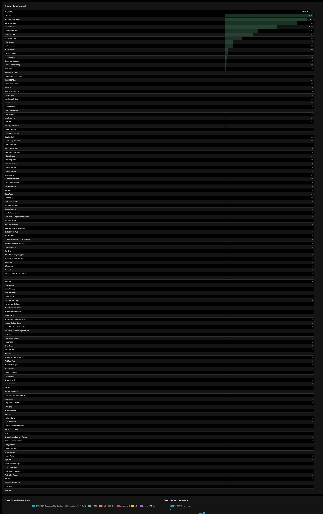
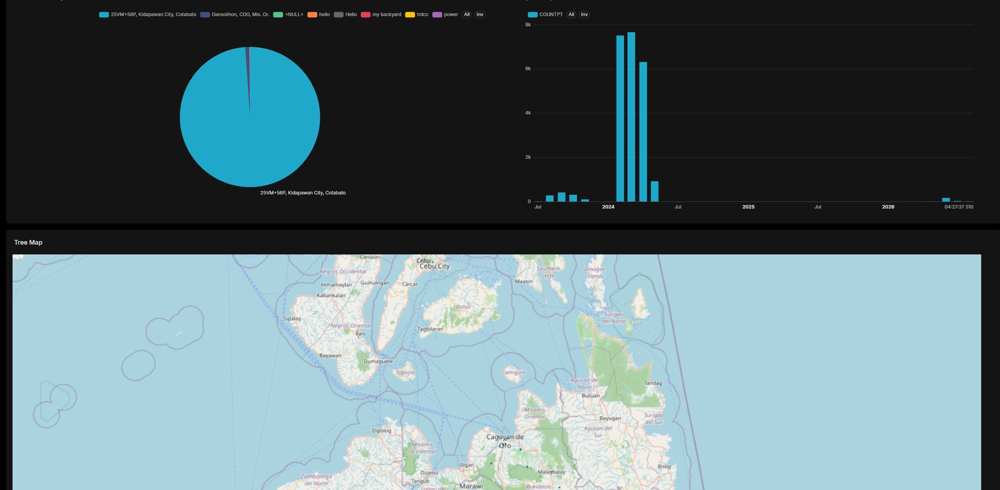
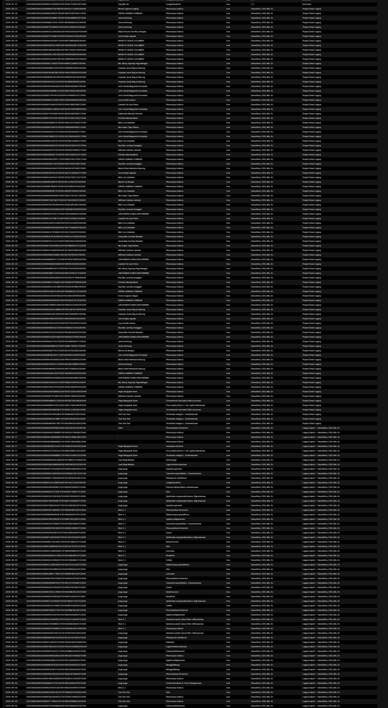
Apache Superset Gallery
These samples show complete dashboard thinking: KPIs, trends, category mix, ranking tables, filters, and supporting narrative in one workspace.
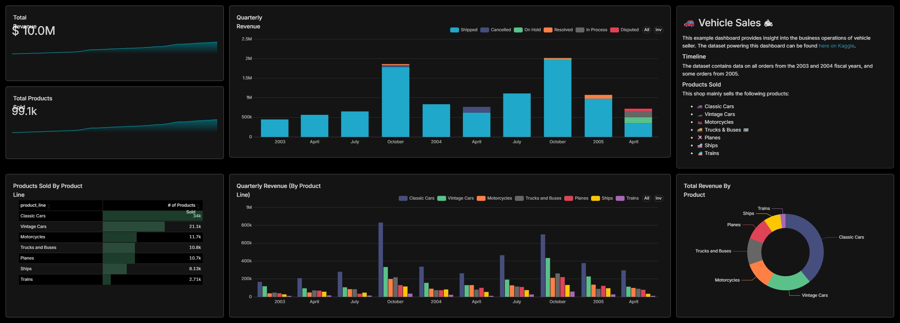
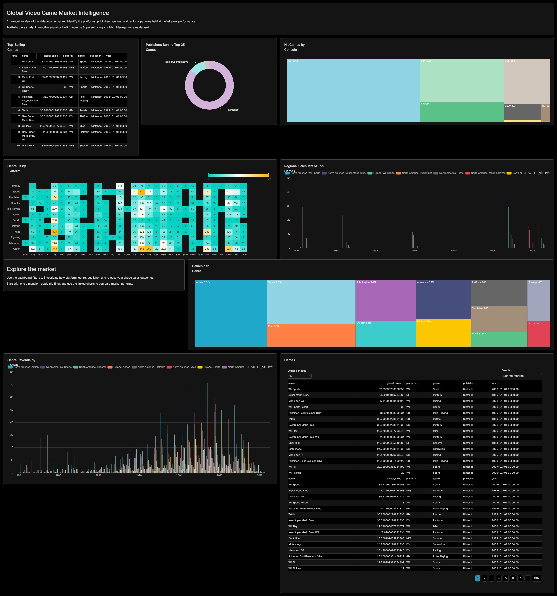
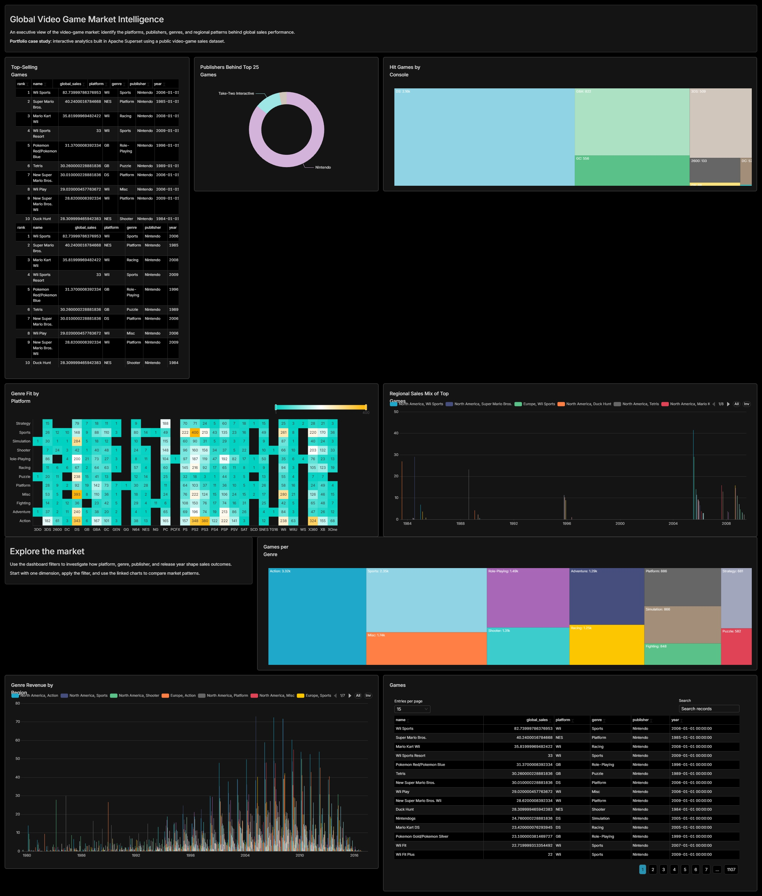
Work Project / Lending Analytics
A work analytics project using loan application data to understand approvals, cancellations, branch performance, loan-type behavior, and trend movement. The goal is to help stakeholders improve lending decisions, operational planning, and process review without exposing personal borrower details.
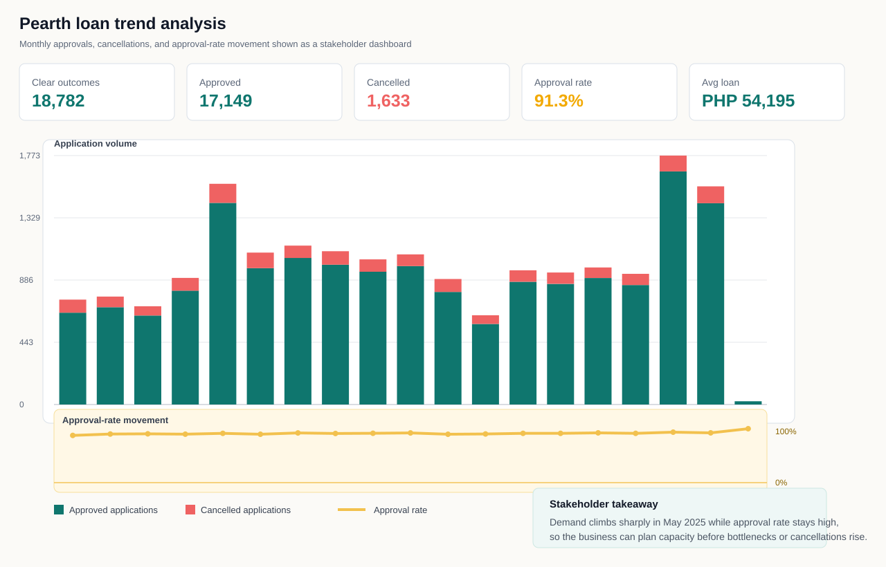
The monthly trend separates application volume from approval-rate health. May 2025 shows a major demand spike while approval performance remains strong, which signals an opportunity to plan staffing and document review capacity before the branch network becomes overloaded.
KPI decision: monitor demand spikes, cancellation movement, and approval rate together. A rise in applications without a matching approval-rate drop can support scaling; a spike with more cancellations should trigger policy, documentation, or customer-targeting review.
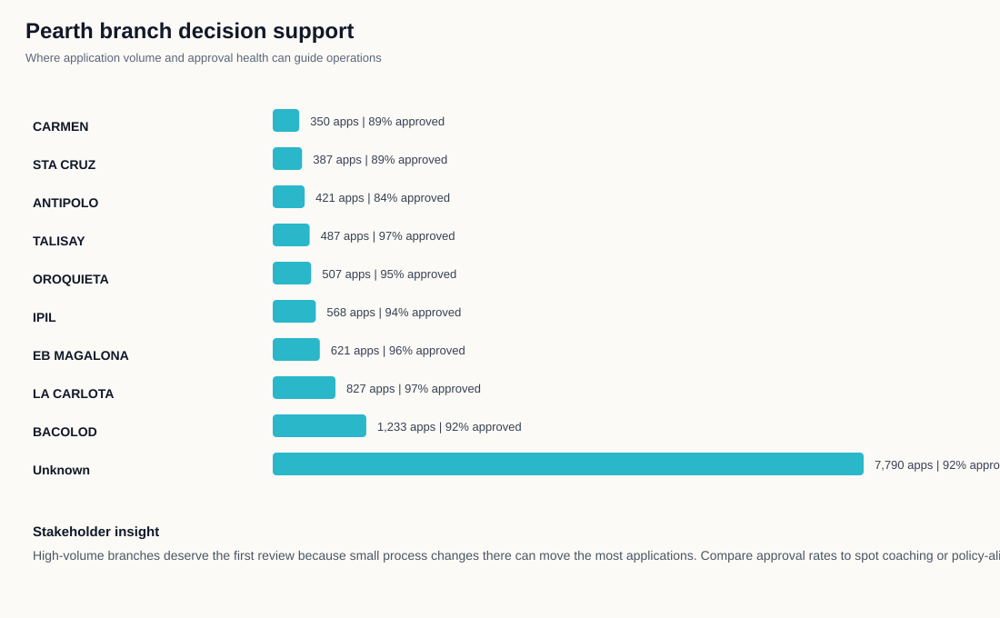
High-volume branches should be reviewed first because small workflow improvements can affect the most applications. Differences in approval rates can guide coaching, staffing, or process review.
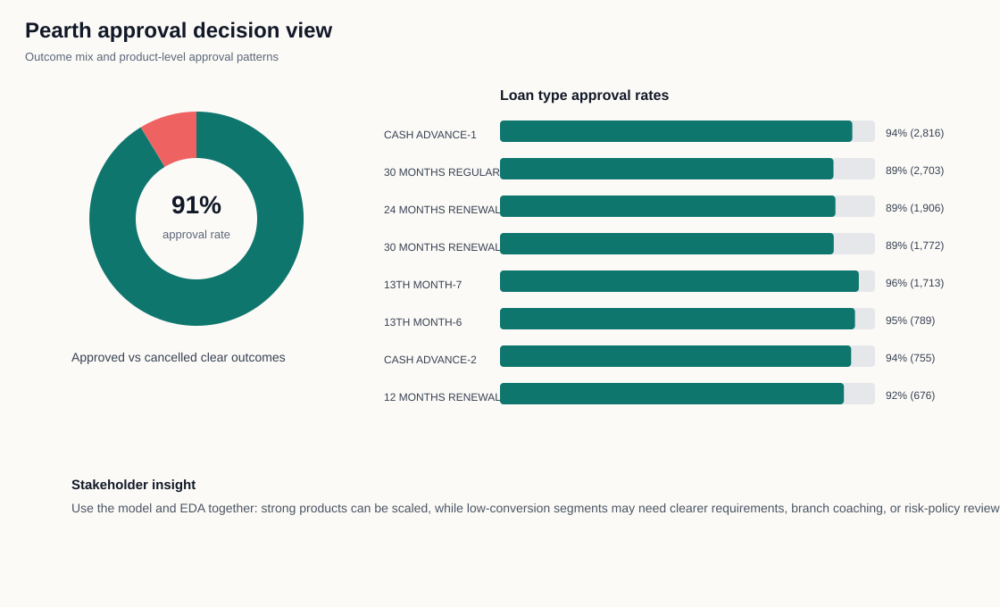
Product-level approval patterns help the business see which loan types convert well and which ones may need clearer requirements, customer education, or risk-policy review.
Technical Profile
Certifications
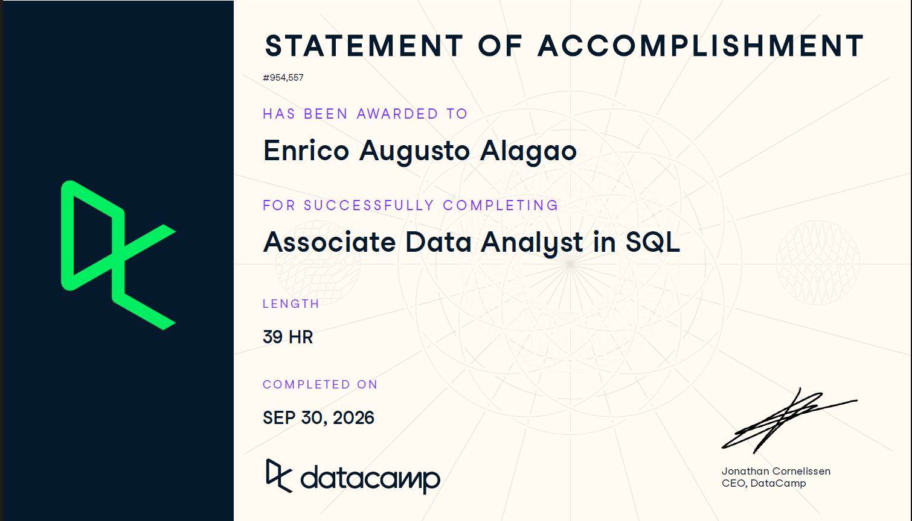
DataCamp, 2026. Reinforces SQL analysis, querying, and business-facing data interpretation.
Pierian Data training covering Python, data science foundations, and machine learning workflows.
Experience
Extract, transform, and load data using SQL and Python. Build dashboards and reports using Databricks, Snowflake, and Apache Superset. Present technical findings in plain language for stakeholders.
Validated and encoded information while maintaining data integrity, and developed enterprise system modules using C# in an MVC framework.
Contact
Email: enricoalagao@gmail.com | Contact: 09292819191 | Willing to be trained and learn the domain, tools, and workflow.